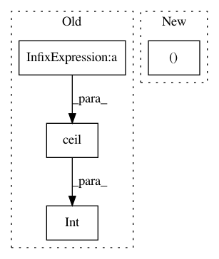

9d520efc029246d63963e0d2f7ff42cf58f6a7c2,models/resnet.py,ResNet,__init__,#ResNet#,99
Before Change
last_duration = int(
math.ceil(sample_duration / 2**n_temporal_downsampling))
last_size = int(math.ceil(sample_size / 2**n_spatial_downsampling))
self.avgpool = nn.AvgPool3d((last_duration, last_size, last_size),
stride=1)
self.fc = nn.Linear(block_inplanes[3] * block.expansion, n_classes)
After Change
self.layer4 = self._make_layer(
block, block_inplanes[3], layers[3], shortcut_type, stride=2)
self.avgpool = nn.AdaptiveAvgPool3d((1, 1, 1))
self.fc = nn.Linear(block_inplanes[3] * block.expansion, n_classes)
for m in self.modules():
In pattern: SUPERPATTERN
Frequency: 4
Non-data size: 4
Instances
Project Name: kenshohara/3D-ResNets-PyTorch
Commit Name: 9d520efc029246d63963e0d2f7ff42cf58f6a7c2
Time: 2018-11-14
Author: kensho.hara@aist.go.jp
File Name: models/resnet.py
Class Name: ResNet
Method Name: __init__
Project Name: junyanz/pytorch-CycleGAN-and-pix2pix
Commit Name: f4af199e0025065d7006fe326b55f25a74e9d625
Time: 2018-04-18
Author: junyanzhu89@gmail.com
File Name: util/visualizer.py
Class Name: Visualizer
Method Name: display_current_results
Project Name: mwickert/scikit-dsp-comm
Commit Name: d723418bfa06234cb325f14dd9160882814f1973
Time: 2018-11-05
Author: andrew@yosmitty.com
File Name: sk_dsp_comm/fec_conv.py
Class Name: fec_conv
Method Name: trellis_plot